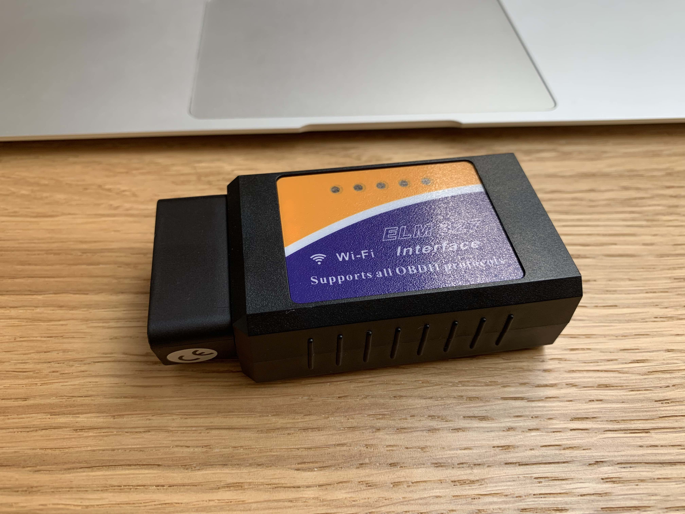
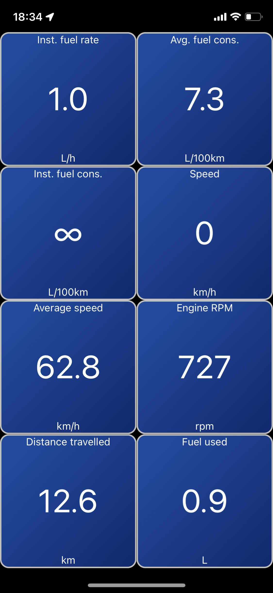

Krabí koktejl #0
Zase ten TypeScript
Po tři čtvrtě roce vývoje v JS mě přepadla nutkavá potřeba přepsat část Electroního projektu do TypeScriptu. Trochu pozdě, ale čím dál tím víc jsem nacházel místa, kde jsem ani netušil která bije a co tím moje mladší já myslelo. Za týden bylo hotovo (a teda nebyl to lehkej tejden). Celý to byl takový velký refactoring. Spousta věcí se smazalo, přepsalo a našlo se i pár míst, kde typování ukázalo chyby.
Stálo to za to? Snad jo. Udělal bych to znova? Jasně.
Diagnostika
V životě každého opatrovníka staršího BMW přijde chvíle, kdy zatouží po vlastní diagnostice. Přeci jen vědět proč ty kontrolky tak vesele svítí je lákavé. Volba padla na Mobilly OBD-II WiFi, které ma děsivé recenze a je to jeden z těch laciných klonů ELM 327 s WiFi rozhraním.

Za těch 170 korun jsem fakt nic nečekal, ale ono to nejen žije, ale i funguje! Stačí to tam prdnout, otočit klíčkem, připojit se na WiFi síť a pak třeba Car Scanner (pro iOS) načítá chybové kódy, maže je a zobrazuje trochu těch real-time informací na parádu. Teda vypadá hrozně, ale funguje.

Tak chybové kódy mám a stačí jen...